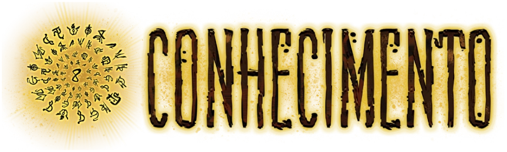

SABER TUDO É PERDER TUDO
" Na imensidão do Outro Lado, existe um ruído crescente. Um som familiar, que desperta uma nostalgia desconfortável, uma lembrança que parece inalcançável no fundo da mente humana. Ele fica cada vez mais alto até beirar o insuportável. E então é possível perceber: esse som não era um ruído. Eram vozes, como se milhões de pessoas gritassem em um coro desesperado. Uma cacofonia de palavras, possibilidades, histórias e pesadelos. E todas essas histórias ensurdecedoras, todo esse conhecimento infinito ao seu redor grita a mesma coisa. A verdade impossível que você deveria ter esquecido."
O Conhecimento é a entidade da consciência. Descobrir, decifrar, entender, aprender. Ter a própria percepção do Outro Lado e suas entidades agrada o elemento de Conhecimento. A manifestação física do elemento de Conhecimento é o registro escrito do Outro Lado, usualmente identificado como os Sigilos do Outro Lado, uma linguagem incompreensível formada de símbolos multifários. Quando uma pessoa Transcende e se conecta completamente com o Outro Lado, ela também se torna fluente na linguagem do Conhecimento durante esse transe, mas é obrigada a esquecê-la no fim dele. A tentativa de traduzir os Sigilos do Outro Lado para qualquer linguagem compreensível da Realidade já levou os mais experientes linguistas à insanidade irremediável.
O comportamento da entidade de Conhecimento parece estar diretamente conectado com a ideia de descobrir, lembrar e registrar eventos e informações. Acontecimentos que foram uma grande origem de Medo marcados em textos, palavras ou sigilos são uma das principais fontes de invocação da entidade do Conhecimento, através desses registros e o conhecimento coroe as mentes humanas através de seus próprios temores. Compreender completamente o Conhecimento, o que seria o equivalente a compreender completamente o Outro Lado.
A RELÍQUIA DE CONHECIMENTO
 Ver mais sobre a Relíquia...AFINIDADE COM CONHECIMENTO
Possíveis consequências da afinidade com Conhecimento: olhos amarelos ou brancos, inscrições na pele, apatia, aura dourada, membros (braços, pernas, dedos) alongados e finos, ossos frágeis, desaparecimento de lábios/boca e orelhas, olheiras profundas, etc. Ter afinidade com o Conhecimento normalmente resulta em uma personalidade mais lógica, estratégica e manipuladora.
CRIATURAS
Criaturas de Conhecimento são lógicas e racionais, apresentando alguma forma de consciência do que são e das ações que tomam, com motivações individuais entre si. Muitas criaturas de Conhecimento não tem uma forma física e se manifestam apenas de forma imaterial, como alucinações, pesadelos ou possessões. Grande parte dessas criaturas são originadas de mentes humanas corrompidas pelo Outro Lado.
Ver mais Criaturas...RITUAIS
Rituais de Conhecimento são sempre direcionados à percepção da Realidade e manipulação da consciência humana. Apesar dos efeitos serem subjetivos ao observador, podem causar impactos físicos reais, com o Outro Lado sobrepondo as regras físicas da Realidade e as reescrevendo singularmente naquele local restrito apagando alvos como se nunca tivessem existido. Esse processo é chamado de “Inexistir”.
Ver mais Rituais...A lógica e a razão do conhecimento reintegram e suprimem o caos da energia
O CONHECIMENTO É O ELEMENTO OPRESSOR DA ENRGIA